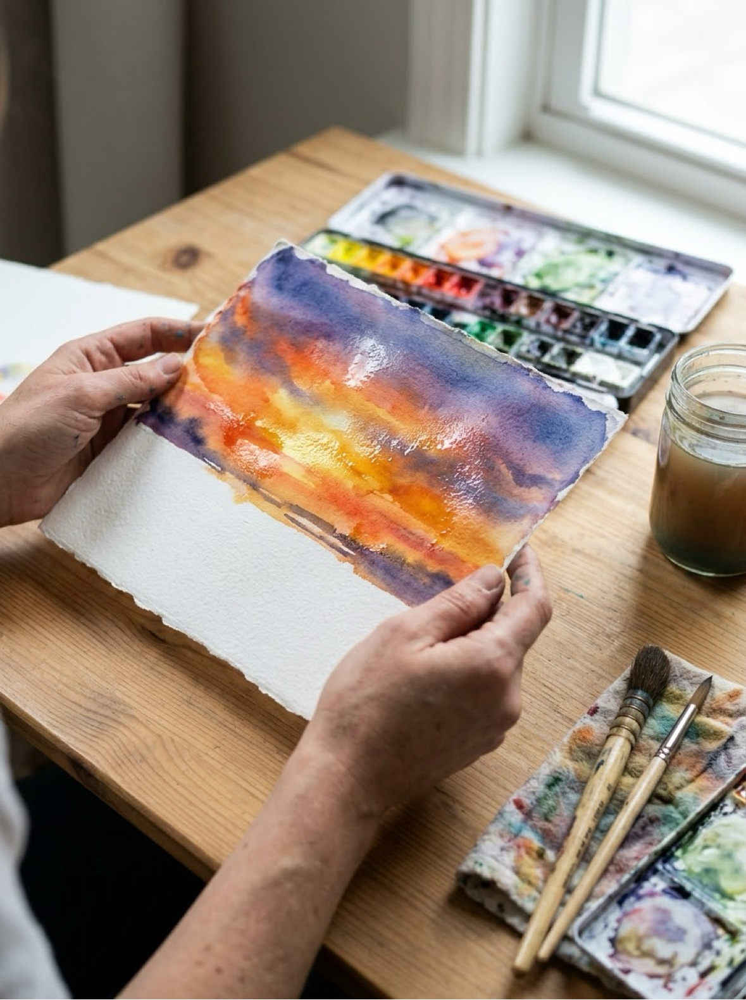
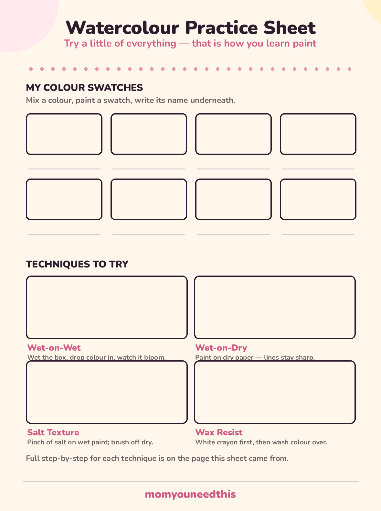

Watercolour Painting Ideas Starter Techniques & Simple Projects That Actually Work
Watercolour painting ideas for people who think they cannot paint: four starter techniques that teach you how the paint behaves, then eight simple projects — a sunset wash, a galaxy sky, flowers, an ocean — that use them. Plus the honest supplies list, including why the paper matters more than the paint.
Last updated: October 21, 2026

Quick Answer
Start with a pan watercolour set, two round brushes, and thick watercolour paper. Learn wet-on-wet (colour blooming into water) and wet-on-dry (crisp lines on dry paper) first — those two techniques, plus salt texture and wax resist, cover everything in the eight projects below. Tape your paper edges down, use two jars of water, and let layers dry before adding more.
At a Glance
- Ages: kids 5+ with setup help; beginners of any age
- What you get: 4 starter techniques, 8 project walkthroughs, free practice sheet
- Supplies: pan watercolours, round brushes, watercolour paper (200 gsm+), two water jars
- Cost: ideas and practice sheet are free — no signup, no email
🧰 Supplies: The Short, Honest List
Paper — this is the one that matters. Watercolour is mostly water, and thin paper cannot take it: it buckles, pills, and tears, and beginners blame themselves for what is actually a paper problem. Buy paper labelled watercolour or mixed-media at 200 gsm or heavier, in a pad. Everything else on this list is forgiving; paper is not.
Paint. A pan set of 12 to 24 colours is the beginner sweet spot — dry cakes you wet with a brush. Student-grade is fine; you are learning how paint behaves, not archiving for a century. Brushes: two round brushes (a big one around size 10–12 for washes, a small one around size 4 for details) with soft bristles that come to a point. The rest: two jars of water (one for rinsing, one kept clean for mixing), a roll of painter's tape, paper towel, and a pencil. That is genuinely the whole kit.
🖨️ The Free Watercolour Practice Sheet
Print the practice sheet and work through it before your first real painting: a swatch grid for learning what your colours actually look like on paper (they dry lighter than they look wet — every beginner learns this the surprising way), and one box for each of the four techniques below. One honest note: for the practice sheet itself, regular paper will wrinkle under wet paint, so treat the printed sheet as your planning and strokes guide, and do the wettest practice — the washes — on a sheet of watercolour paper with the same boxes drawn in pencil. The swatch colours and technique notes you record on the printout become the reference you keep.

🌈 Download Your Free Practice Sheet
Swatch grid plus wet-on-wet, wet-on-dry, salt and wax-resist boxes
⬇️ Download Free Practice Sheet 🖨️ Print🎁 Free printable for beginner watercolour painters
💧 The Four Starter Techniques
Every project below is built from these four. Learn them in this order, on scrap paper, and you have learned most of watercolour:
- Wet-on-wet. Brush clean water over an area until it glistens, then touch a loaded brush of colour to it and watch the colour bloom and drift on its own. This is how you paint skies, water, and soft backgrounds. The rule: the wetter the paper, the further and softer the paint spreads — you steer it, you do not control it, and that is the effect.
- Wet-on-dry. Paint onto completely dry paper. Lines stay where you put them, edges are crisp, and colours stay separate. This is how you add trees over a dry sky, windows on a house, details on anything. Most beginner frustration is wet-on-dry attempted on paper that was still damp.
- Salt texture. While a wash is still wet and shiny, sprinkle a pinch of table salt over it and leave it alone until the paint is fully dry — an hour is not too long. Brush the salt off to reveal a frosty, starry texture. Magical in skies and galaxies; the trick is timing, because salt on nearly-dry paint does nothing.
- Wax resist. Draw on dry paper with a white wax crayon — stars, waves, snowflakes, a name — then wash watercolour over the top. The paint cannot stick to the wax, so your drawing appears like a photograph developing. Kids find this one genuinely astonishing, and it is the easiest technique on the list.
🌅 Watercolour Painting Ideas: 8 Projects That Work
A note before the list: this page collects watercolor painting ideas for beginners who want finished pictures, not exercises — although the practice sheet above is worth twenty minutes first.
1. Sunset wash. Search any beginner board and you will see watercolor painting sunsets everywhere, because a three-band wash is almost impossible to get wrong. Wet the top two-thirds of the page, then paint bands across it — deep orange at the horizon, pink above it, purple-blue at the top — and let the wet edges blend themselves. When it is bone dry, paint a black silhouette along the bottom: a hill line, a fence, a row of simple trees. That silhouette is what turns a wash into a picture.
2. Galaxy sky. Wet the whole page and drop in dark blue, purple and a little black, tilting the paper so the colours drift together. While it is wet, salt it. When it is completely dry, flick white paint from a toothbrush for stars, and add one bigger star or a moon with white paint and a small brush. Messy edges are correct here; space is not tidy.
3. Flower field. Paint a green wash across the bottom half, lighter at the top. Dry it fully. Then dab flower heads with the corner of a brush or a cotton bud — clusters of dots in two or three colours, smaller towards the horizon line — and finish with a few thin green stems on the nearest flowers only.
4. Ocean and beach. Horizontal bands again: wet-on-wet blue-green for the sea at the top, a dry gap of white paper for foam, and a warm sandy wash at the bottom once the sea is dry. A few white gel-pen or white-paint flecks along the foam line after drying sells the whole thing.
5. Leaf prints. Paint the back of a real leaf generously with paint, press it painted-side down onto dry paper, cover it with scrap paper, rub firmly, and lift. The veins print beautifully. A page of leaves in autumn colours makes a card front or a wrapping paper sheet.
6. Rainbow arc. On dry paper, paint one confident arc per colour, working from the top band down and rinsing between colours. Leave a hair of white between bands or let them just touch — both look good. This is the project five-year-olds can genuinely finish alone.
7. City skyline. Paint a dusk wash (orange to purple, like the sunset), let it dry completely, then paint a row of black rectangles along the bottom in different heights, with tiny roofs, chimneys and aerials. Add lit windows last: tiny yellow rectangles with a small brush, once the black is dry.
8. Birthday card fronts. Fold a sheet of watercolour paper in half and treat the front as a tiny painting: one balloon, one flower, one heart, one cupcake — a single simple shape with a wash inside it beats a busy scene at card size. Cards are the perfect beginner project because a small painting is a finished painting.
👧 Painting Watercolour with Kids
Kids and watercolour get along if you respect the paint's two rules: it needs less water than children think, and layers need drying time. Give a young painter one colour family per session — blues and greens, say — because a full palette in small hands becomes brown by the third painting, and brown paintings disappoint their own artists. Big brushes help; so does taping the paper down so it cannot slide away from the brush, which is the main cause of toddler paint tears.
Build drying time into the session instead of fighting it: paint the sky, then go and choose the colours for the next part while it dries. And name the effects as they happen — blooming, bleeding, lifting — because a child who has words for what the paint is doing stops calling surprises 'mistakes' and starts using them on purpose.
🎨 More Fun for Moms & Kids
🎨 Painting Ideas Hub
Every painting project on the site, sorted by age and type. Browse all painting ideas.
🏺 Pottery Painting Ideas
Solid surfaces and satisfying projects — fifteen designs with a free planner. Plan a pottery project.
🦋 Easy Face Painting Ideas
Eight step-by-step designs for parties and Halloween. See the designs.
👆 Finger Painting
Painting for the smallest hands, with taste-safe recipes. Start finger painting.
🎨 Free Coloring Pages
Drawing and colouring fun for every age, all free to print. Browse coloring pages.
📚 Free Resources
Worksheets, printables and tools for moms in one hub. Browse free resources.
❓ Frequently Asked Questions
What paper is best for watercolour painting?
Thick paper made for watercolour — look for 200 gsm or heavier, or paper labelled watercolour or mixed-media. Regular printer and copy paper is too thin: it buckles into waves as soon as it gets wet and can pill or tear under a brush. If you are painting with kids and burning through sheets, heavy watercolour paper bought in a bulk pad is the single upgrade that makes the biggest visible difference.
Why does my watercolour look muddy?
Almost always one of three reasons: too many colours mixed together (complementary colours like purple and yellow turn brown-grey), painting a new wet layer over a layer that had not dried, or dirty water — rinse brushes and refresh the water jar often. Limit a painting to two or three colours that are neighbours on the colour wheel and let layers dry, and the mud problem mostly disappears.
Are pan or tube watercolours better for beginners?
For beginners and kids, pan sets — the dry cakes in a box — are easier: less waste, less mess, nothing to squeeze out, and they keep for years. Tubes give richer, more intense colour and are what most adult painters graduate to, but a little goes a very long way and they dry out if left open. Start with pans; you can always move up, and every project on this page of watercolour painting ideas works with a basic pan set.
How do I stop watercolour paper from buckling?
Use heavier paper, tape all four edges down to a board or table with painter's tape (which also leaves a clean white border when you peel it off), and avoid flooding the page — watercolour needs less water than beginners think. If a finished painting dries wavy, leave it under a stack of heavy books overnight; it will not be perfect, but it will be close.
Can kids use watercolours?
Yes — watercolours are one of the best first paints for kids: non-toxic sets are widely available, they clean up with water, mistakes are hard to make permanent, and the paint itself teaches patience because layers need drying time. Give young children big brushes, one or two colours at a time, and thick paper, and supervise little ones who still mouth their brushes.